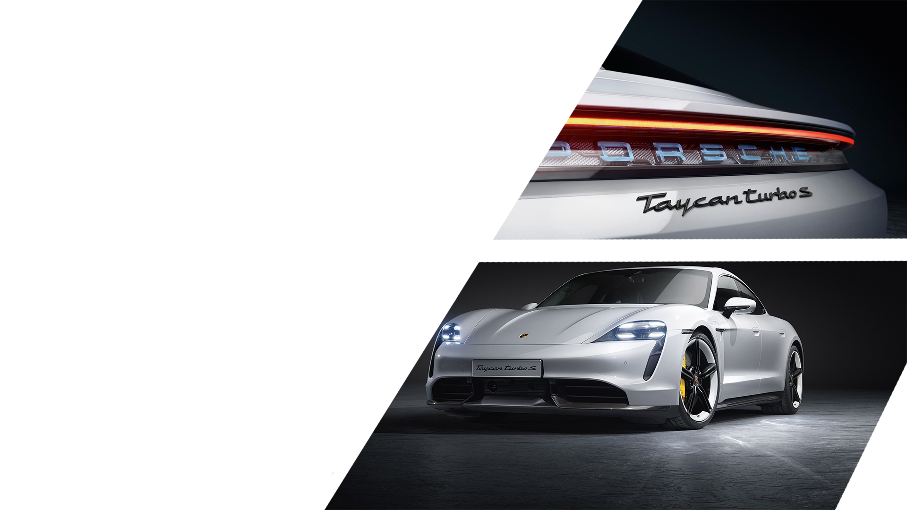
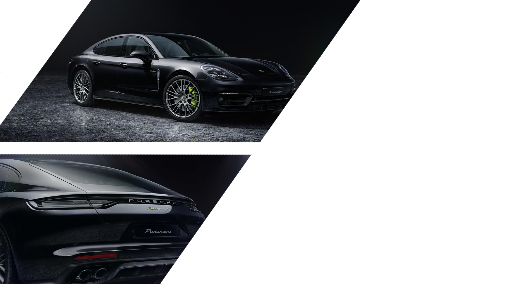
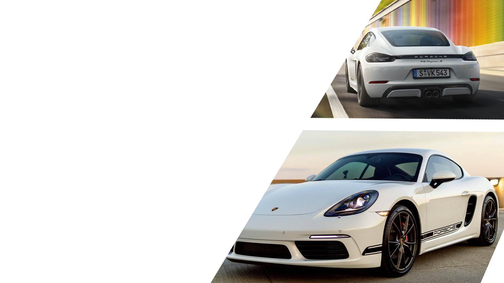
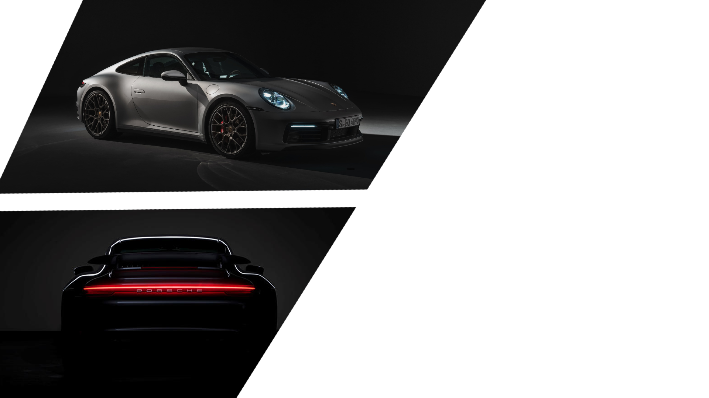

Cand a fost lansata in 2019, prima masina sport electrica Porsche
a determinat oamenii sa se regandeasca cum arata o masina
electrica. Numarul tot mai mare de oameni care se gandesc
sa treaca la vehicule electrice si care cauta o solutie
premium de lux nu ar mai trebui sa faca compromisuri
atunci cand isi cumpara noua masina. In scurtul
interval de timp de la lansare, si-a extins gama
de modele pentru a include versiuni cu un
accent si mai mare pe adecvarea de zi
cu zi si o capacitate mai mare pentru
drumuri de proasta calitate. Iata ce
face ca Taycan sa iasa in
evidenta.

Poate fi o viziune logica? Este macar
permis sa fie? Probabil ca nu. Credem ca,
cu cat o idee este mai vizionara la inceput, cu
atat este mai interesanta la sfarsit. Atunci merita
sa lupti pentru asta. Asa a fost cazul Panamera. O
masina sport pentru patru persoane cu performante
impresionante si confort deosebit.Fie ca este Panamera,
Panamera Executive sau Panamera Sport Turismo – silueta
si proportiile sunt inconfundabile Porsche. Atletic, rationalizat, cu contururi clare si muschi puternici.

Modelele 718 au fost facute pentru acest sport. Sunt roadstere cu
motor central care unesc spiritul sportiv al legendarei Porsche
718 cu masina sport de maine – si o transfera pe drumurile
lumii de astazi. Cu un singur scop: sa scoti cotidianul din
fiecare zi.Precis, nu fantezist. Increzator, nu retinut.
Joasa, larga si eleganta. Designul exterior al
modelelor 718 se distinge prin margini
sportive si contururi formale clar
definite.

Mai putine kilograme inseamna mai
multa agilitate, iar contactul cu drumul
este mai important ca niciodata. 911 Carrera
este o eliberare constienta pentru o placere
sporita de a conduce.Forma lui 911 Carrera este
inconfundabila datorita liniei sale emblematice si a
liniilor elegante ale acoperisului specific. Acestea au
caracterizat Porsche inca din 1963, la fel ca si masinile sport cu performante uimitoare.